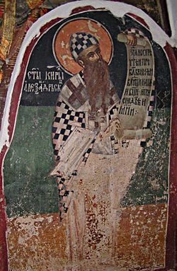
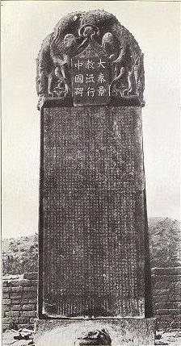
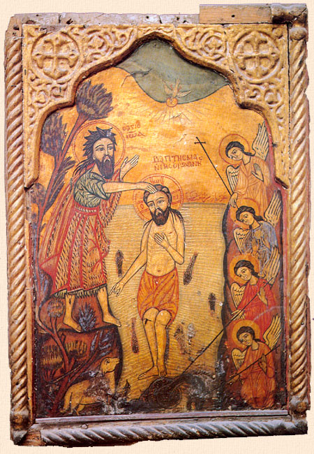
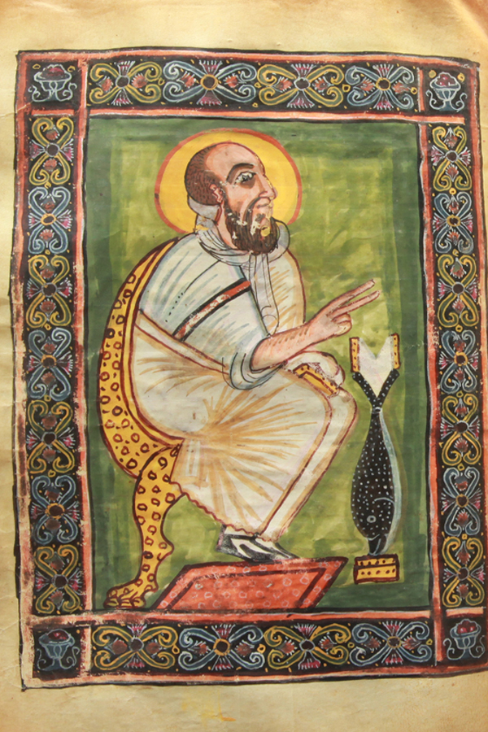
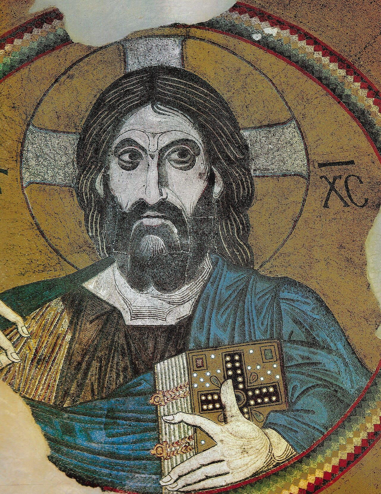

Las comisiones firmaron que la fe es la misma. Mil quinientos años de cisma reconocidos como un fracaso de traducción — y el cisma sigue ahí.
En 451, en Calcedonia, el concilio definió a Cristo como un solo sujeto reconocido en dos naturalezas. Una parte muy considerable del cristianismo oriental dijo que no.
Siguen diciendo que no. La Iglesia copta, la siríaca ortodoxa, la armenia apostólica, la etíope, la eritrea y la malankara no recibieron Calcedonia, y la Iglesia asiria de Oriente no recibió Éfeso. Son, juntas, decenas de millones de personas con mil quinientos años de liturgia continua a sus espaldas. Y en los manuales de divulgación aparecen, cuando aparecen, bajo dos etiquetas que ellas rechazan.
De Nestorio se sabía, hasta el siglo XIX, lo que dijeron sus adversarios: fragmentos dentro de la polémica y unas pocas cartas latinas. Nada suyo transmitido de forma independiente.
Luego apareció un libro. El único ejemplar conocido de su obra de madurez —en siríaco— se conservaba en la biblioteca del patriarca de la Iglesia de Oriente, en Qudshanis, en las montañas del Hakkari, y había quedado mutilado en la masacre de 1843. En 1889 un sacerdote hizo una copia apresurada en Urmía; de ella derivan todas las demás. El original se perdió, probablemente durante la Primera Guerra Mundial. Paul Bedjan publicó el texto siríaco en 1910 y François Nau la traducción francesa el mismo año.
Conviene precisar, porque la historia se cuenta a veces como un hallazgo romántico: 1889 es la fecha de la copia que puso el texto en circulación, no la del descubrimiento de un manuscrito ignorado. En la Iglesia de Oriente el libro se conocía.
Y el título con que se conoce es un malentendido encantador. En siríaco se llama «el libro llamado Bazar de Heráclides». «Heráclides» es un seudónimo, para proteger la obra de un condenado. Y «Bazar» parece ser el resultado de una cadena de traducciones: el griego original diría probablemente pragmateía —«tratado», pero también «negocio»— y el siríaco lo vertió por una palabra que significa «mercancía». De ahí el bazar.
¿Qué dice el libro? Que Nestorio niega haber enseñado dos personas; que afirma dos naturalezas en un solo prósopon; que acepta que María es madre de Dios en el sentido debido —«nació en la carne Cristo, que es Dios sobre todas las cosas»—; y que considera que Calcedonia lo vindicó, aun manteniendo su condena.
Y aquí hay que repartir con cuidado, porque el asunto se cita demasiado redondo. Hay consenso en que el «nestorianismo» de los manuales —dos personas en Cristo— no es la doctrina de Nestorio, y en que el rótulo aplicado a la Iglesia de Oriente es inexacto. No hay consenso en que su cristología equivalga a la calcedonense: Grillmeier y Scipioni sostienen que su esquema es estructuralmente insuficiente, se acepte o no la mala fe de sus acusadores.
Añado que la pregunta «¿era Nestorio nestoriano?» es buen titular y mala pregunta. «Nestorianismo» es una construcción de sus adversarios, de modo que la respuesta es trivialmente que no. La pregunta sustantiva es si su cristología era adecuada, y esa sigue abierta.

«Monofisita» es inexacto, y la corrección es la razón por la que esta entrega existe.
El monofisismo propiamente dicho es la doctrina de Eutiques: que tras la unión hay una sola naturaleza, ni puramente divina ni puramente humana, con la humanidad absorbida. Eutiques fue condenado en Constantinopla en 448, rehabilitado en el llamado «latrocinio» de Éfeso en 449 y condenado definitivamente en Calcedonia.
Lo que sostienen las iglesias copta, siríaca, armenia, etíope, eritrea y malankara es el miafisismo: la fórmula de Cirilo, «una naturaleza encarnada del Dios Verbo», donde mía no significa «única y simple» sino «una compuesta», y donde la humanidad se conserva íntegra y consustancial a la nuestra, sin mezcla, sin confusión y sin cambio.
La diferencia en una línea: el eutiquianismo niega la integridad de la humanidad; el miafisismo la afirma. La discrepancia con Calcedonia no es sobre si la humanidad de Cristo es completa —ambos dicen que sí— sino sobre si naturaleza es el término adecuado para nombrar las dos realidades después de la unión, o debe reservarse para el sujeto único.
Y el dato que lo cierra: esas iglesias condenaron a Eutiques igual que Calcedonia. El sínodo de Dioscoro no lo defendió por su doctrina, sino en un pleito de jurisdicciones.
Hay que conceder una cosa a quien use la etiqueta antigua: en sentido estrictamente etimológico, mía es «una», y el miafisismo es una forma de «mono-fisismo». Por eso algunos historiadores siguen empleando el término en sentido amplio. Pero las iglesias implicadas lo rechazan porque evoca al Eutiques que ellas mismas condenaron, y una comisión mixta de 2014 lo calificó de «engañoso y ofensivo». Cuando alguien dice que el nombre con que lo llaman describe una doctrina que él condena, la carga de la prueba cambia de lado.


Y ahora una ironía filológica de primer orden, que conviene dar con tacto porque corta hacia dentro.
La fórmula bandera del miafisismo —mía physis tou theoû lógou sesarkoméne— la atribuían Cirilo y Dioscoro a Atanasio. No es de Atanasio. Procede de Apolinar de Laodicea, condenado en Constantinopla en 381. El mecanismo está documentado: los escritos de la escuela apolinarista, condenados, sobrevivieron circulando bajo nombres ortodoxos, y la fórmula estaba mal archivada en la cancillería alejandrina. Cirilo la usó de buena fe mientras rechazaba expresamente el apolinarismo.
Dos precisiones. La primera es gramatical y casi todas las traducciones la estropean: sesarkoméne es femenino y concuerda con physis, no con lógou. Lo encarnado es la naturaleza, no —gramaticalmente— el Verbo. La traducción corriente «una naturaleza del Verbo encarnado» pone el caso mal.
La segunda es histórica y es la que impide usar esto como un «te pillé»: los críticos sirios ya lo denunciaron en vida de Cirilo, y hay buenas razones para pensar que después de 432 el propio Cirilo admitió que podían tener razón sobre la procedencia de la frase, desplazándose hacia el lenguaje de hypóstasis sin abandonar la teología de fondo. La sospecha sobre la fórmula es contemporánea, no un descubrimiento de la filología alemana del novecientos — aunque fuera esa filología, con la edición crítica del corpus apolinarista, la que fijó la atribución.
Y lo que no se sigue de nada de esto, dicho antes de que alguien lo intente: que la fórmula venga de Apolinar no convierte a Cirilo en apolinarista, ni al miafisismo tampoco. Volveremos sobre este tipo exacto de inferencia al cerrar.
Tres declaraciones conjuntas, con su texto. Las tres primeras filas cuentan una historia de reconciliación. La cuarta cuenta que no ha ocurrido, y por eso está marcada. Pulsa cualquier casilla para leer el documento y lo que falta de él.
En el siglo XX ocurrió algo notable y poco conocido: las jerarquías se sentaron a hablar y llegaron a acuerdos cristológicos. El cuadro de arriba trae los tres principales con su texto. En 1984 Roma y la Iglesia siríaca ortodoxa firman que las divisiones surgieron únicamente por diferencias de terminología y de cultura. En 1990, en Chambésy, ortodoxos bizantinos y orientales declaran que ambas familias han mantenido siempre la misma auténtica fe cristológica ortodoxa, y piden que se levanten los anatemas. En 1994 Roma y la Iglesia asiria reconocen la legitimidad de Theotokos y Christotokos como expresiones de la misma fe — es decir, Roma concede en 1994 el punto exacto por el que depuso a Nestorio en 431.
Y aquí es donde esta entrega se separa del relato que suele hacerse.
La secuencia «1984, 1990, 1994: resuelto, era un malentendido de mil quinientos años» es falsa como descripción del estado real. Treinta y seis años después de Chambésy, los anatemas siguen sin levantarse y no hay comunión eucarística entre ortodoxos bizantinos y orientales. El informe de la conferencia de Boston de noviembre de 2025, publicado en febrero de 2026, sigue recomendando que se levanten, y propone pasos intermedios —como una aceptación más amplia de la comunión para matrimonios mixtos entre las dos familias— que confirman por implicación que la comunión general no existe. Los documentos del diálogo de los últimos cincuenta años fueron recibidos formalmente solo por un número reducido de iglesias de ambos lados; el resto nunca emitió respuesta oficial.
Hay además oposición organizada y con argumentos. El memorándum de la Sagrada Comunidad del Monte Athos objeta que la comisión trate como ortodoxa una cristología que los Padres llamaron herética, que los textos no muestren con claridad la aceptación de los concilios cuarto a séptimo, que la decisión de levantar anatemas careciera de autorización sinodal y que se haya permitido diferir el reconocimiento de la ecumenicidad de los concilios hasta después de la unión.
Este es el contrapeso obligatorio, y casi nadie lo da.
Los no calcedonianos tenían objeciones reales, no verbales. Que la Definición dijera «en dos naturalezas» y no «de dos naturalezas» no era un sinónimo para Alejandría: era abandonar el lenguaje de Cirilo justo en el punto en que Cirilo había ganado en 431. Que Calcedonia rehabilitara a Teodoreto de Ciro y a Ibas de Edesa —depuestos en 449, adversarios declarados de Cirilo— provocó tumulto en la propia sala cuando el legado ordenó reponer a Teodoreto y darle asiento. Que tres pasajes del Tomo de León fueran impugnados como posiblemente nestorianos, hasta el punto de que una comisión necesitó cinco días para declararlo compatible con Cirilo. Y que Dioscoro fuera depuesto sin comparecer.
La prueba de que el agravio era real la dio el propio Imperio un siglo después. En la controversia de los Tres Capítulos, Justiniano y el concilio de 553 condenaron a Teodoro de Mopsuestia, los escritos de Teodoreto contra Cirilo y la carta de Ibas — precisamente para recuperar a los no calcedonianos — y rompieron por ello la comunión con medio Occidente. Si el conflicto hubiera sido solo de palabras, nadie habría pagado ese precio.
Lo cual no autoriza el error contrario. La tesis decimonónica de que el miafisismo fue nacionalismo copto o sirio disfrazado de teología está hoy ampliamente desacreditada. Había teología, había jurisdicción y había lengua litúrgica, y las tres cosas a la vez.

Las divisiones «de ningún modo afectan ni tocan la sustancia de su fe, puesto que surgieron únicamente a causa de diferencias de terminología y de cultura».
«Ambas familias han mantenido siempre lealmente la misma auténtica fe cristológica ortodoxa.» Y el párrafo 10: los anatemas deben ser levantados.
Reconocen «la legitimidad y la rectitud» de Theotókos y de Christotókos como expresiones de la misma fe. El punto por el que Nestorio fue depuesto en 431.
Treinta y seis años después de Chambésy, sigue recomendando que se levanten los anatemas — y propone pasos intermedios. No hay comunión eucarística.
Objeta que la decisión de levantar anatemas careció de autorización sinodal y que se difiera el reconocimiento de los concilios hasta después de la unión.
Siete entregas describiendo cómo se formaron unas definiciones: con qué materiales, en qué fechas, en qué discusiones y a costa de quién. Toca decir qué no se sigue de todo esto, y decirlo con el nombre técnico.
La falacia genética consiste en inferir la verdad o falsedad de una proposición a partir de su origen, su historia o el proceso causal que la produjo, en lugar de a partir de sus razones y su contenido. Es una falacia informal de relevancia: el origen de una creencia es histórica y sociológicamente informativo, y lógicamente irrelevante para su valor de verdad.
Y opera en las dos direcciones, que es lo que casi nunca se dice.
En una: mostrar que la fórmula mía physis procede de Apolinar, que el credo que se recita es de 381 y no de 325, que Theotokos se impuso en una sola jornada el 22 de junio de 431, o que el canon 28 se fundó en el rango imperial de una ciudad, establece que esas formulaciones tienen una historia humana y contingente. No establece que sean falsas. Toda proposición verdadera fue formulada por primera vez por alguien, en algún sitio y por motivos mezclados.
En la otra: «es antiguo, luego es verdadero» es igual de falaz, y es la forma dominante del argumento apologético. La antigüedad de una doctrina es un dato histórico, no una credencial epistémica.
Hay un caso límite que conviene distinguir, porque es fino. Si Cirilo adoptó la fórmula porque la creía de Atanasio, entonces su razón para adoptarla era defectuosa, y eso sí afecta a la fuerza del argumento de autoridad que él estaba usando. Lo que no afecta es a la verdad de lo que la fórmula afirma. Distinguir «la razón que se dio era mala» de «lo afirmado es falso» es exactamente la distinción que la falacia genética borra.
De modo que esta serie no ha demostrado que Jesús sea Dios, ni que no lo sea. Ha descrito un proceso. Una historia crítica de la formación del dogma no está en posición de pronunciarse sobre la verdad de lo que describe, y conviene decirlo expresamente para que ni la lectura devocional ni la antirreligiosa puedan reclamar estas siete entregas como munición. Las dos se llevarían un chasco si leyeran con cuidado.
Queda la forma del proceso, que no era la que se cuenta. Entre el año treinta y el cuatrocientos cincuenta y uno no hubo un ascenso: hubo un estrechamiento. Un campo ancho de maneras de decir qué es Jesús respecto del Dios de Israel, recortado frontera a frontera hasta dejar una franja muy delgada — y, fuera de ella, nombres puestos casi siempre por el otro lado.
Y queda una imagen, que es con la que esta serie cierra.

Mil quinientos años de cisma reconocidos por escrito como un fracaso de traducción. Y el cisma sigue ahí.
Describir cómo se produjo una creencia no es pronunciarse sobre su verdad, y las siete entregas han hecho lo primero y no lo segundo. Esto no es una cautela de cortesía: es la diferencia entre historia y panfleto.
Quien quiera leer aquí que el dogma queda refutado por tener fecha de nacimiento comete una falacia con nombre. Y quien quiera leer que una doctrina es verdadera por ser antigua comete la misma falacia en la otra dirección. Las dos lecturas son igual de cómodas, igual de populares e igual de malas.
Es consenso que el «nestorianismo» de los manuales no es la doctrina de Nestorio y que el rótulo aplicado a la Iglesia de Oriente es inexacto; que el monofisismo propiamente dicho es la doctrina de Eutiques, condenada también por las iglesias no calcedonianas; que la fórmula mía physis tou theoû lógou sesarkoméne procede de Apolinar de Laodicea y no de Atanasio; y que a fecha de hoy no hay comunión eucarística entre ortodoxos bizantinos y orientales.
Está en debate abierto si la cristología de Nestorio equivale a la calcedonense, que es cosa distinta de si fue malinterpretado: Bethune-Baker, Anastos y Chesnut sostienen lo primero, Grillmeier y Scipioni lo niegan. Y está en discusión hasta dónde llegó el propio Cirilo en su reconocimiento de que la fórmula podía no ser de Atanasio.
Dos correcciones de cita que hago porque he visto las dos mal. La declaración de 1994 dice «legitimidad y rectitud de estas expresiones de la misma fe»; no dice «complementarias» ni «expresiones legítimas», que es como suele citarse. Y la de 1984 sí dice literalmente «únicamente» —ahí la memoria colectiva acierta—, pero es un documento pastoral de dos jerarcas, no un acto sinodal ni una tesis historiográfica.
Y una cautela sobre la fecha de edición del corpus apolinarista, que es la pieza en que descansa la atribución de la fórmula: la obra crítica de referencia es la de Hans Lietzmann, y las fuentes bibliográficas discrepan entre 1904 y 1905, probablemente por diferencia entre fecha de impresión y de portada. Lo digo en vez de elegir una en silencio. Y no atribuyo la demostración a Dräseke, como se lee a veces, porque no he podido verificar el alcance de su contribución a este punto concreto.
Nestorio. Liber Heraclidis, ed. siríaca de Paul Bedjan, Leipzig, 1910; trad. francesa de François Nau, París, 1910; trad. inglesa de G. R. Driver y L. Hodgson, Oxford, 1925 · J. F. Bethune-Baker, Nestorius and his Teaching, Cambridge University Press, 1908 · Roberta C. Chesnut, «The Two Prosopa in Nestorius' Bazaar of Heracleides», JTS, 1978 · Aloys Grillmeier, Christ in Christian Tradition · Sebastian Brock, sobre el carácter erróneo del rótulo «nestoriano» aplicado a la Iglesia de Oriente · John A. McGuckin, Saint Cyril of Alexandria and the Christological Controversy, 2004.
Miafisismo y la fórmula. Cirilo de Alejandría, Primera carta a Suceso, donde rechaza el apolinarismo mientras defiende la fórmula · Hans Lietzmann, Apollinaris von Laodicea und seine Schule, Mohr, Tubinga, 1904 o 1905 según la fuente · Declaración de la comisión mixta anglicano-ortodoxa oriental, 2014, sobre el carácter «engañoso y ofensivo» de la etiqueta.
Las declaraciones. Declaración común de Juan Pablo II e Ignacio Zakka I Iwas, 23 de junio de 1984 · Segunda Declaración Acordada de la comisión mixta entre ortodoxos y ortodoxos orientales, Chambésy, 23-28 de septiembre de 1990, con la primera del monasterio de Anba Bishoy, junio de 1989 · Declaración cristológica común de la Iglesia católica y la Iglesia asiria de Oriente, 11 de noviembre de 1994 · informe de la conferencia ortodoxa oriental-ortodoxa oriental celebrada en Holy Cross, Boston, noviembre de 2025, publicado en febrero de 2026 · Memorándum de la Sagrada Comunidad del Monte Athos sobre el diálogo con los no calcedonianos.
El contrapeso. Actas de Calcedonia sobre la rehabilitación de Teodoreto de Ciro e Ibas de Edesa y sobre el examen del Tomo de León · edicto de Justiniano de 543-544 y concilio de Constantinopla II (553) sobre los Tres Capítulos.